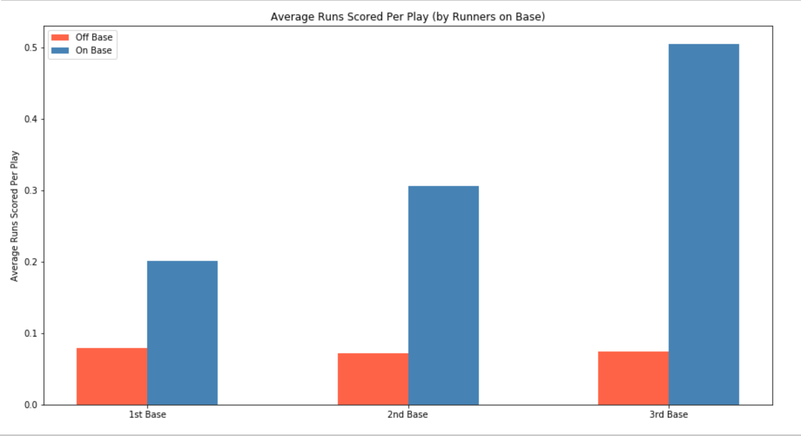
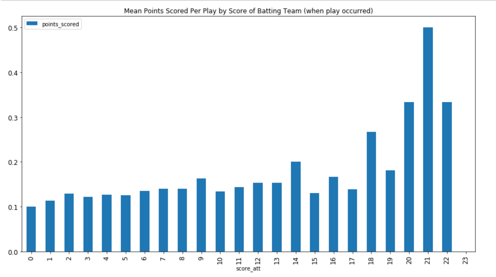
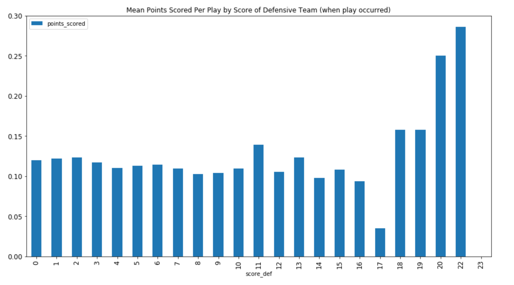
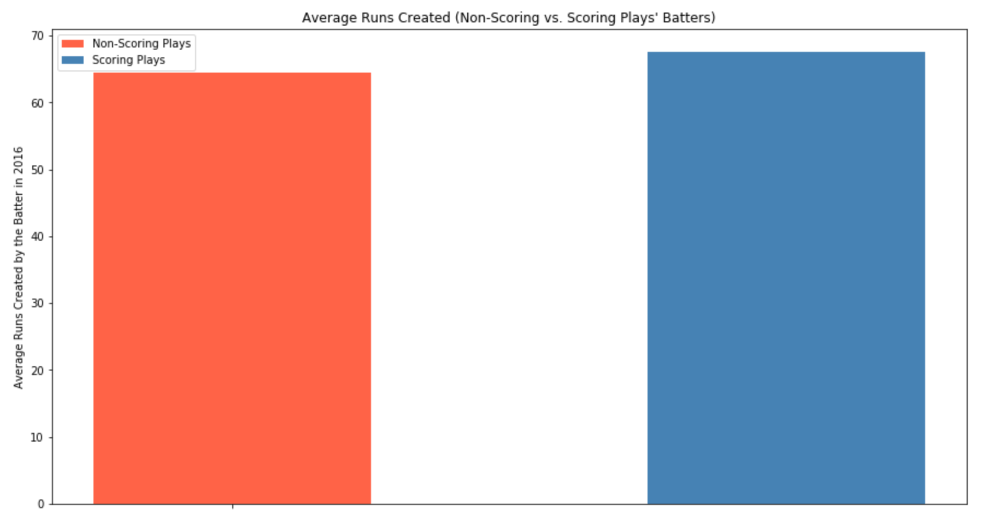
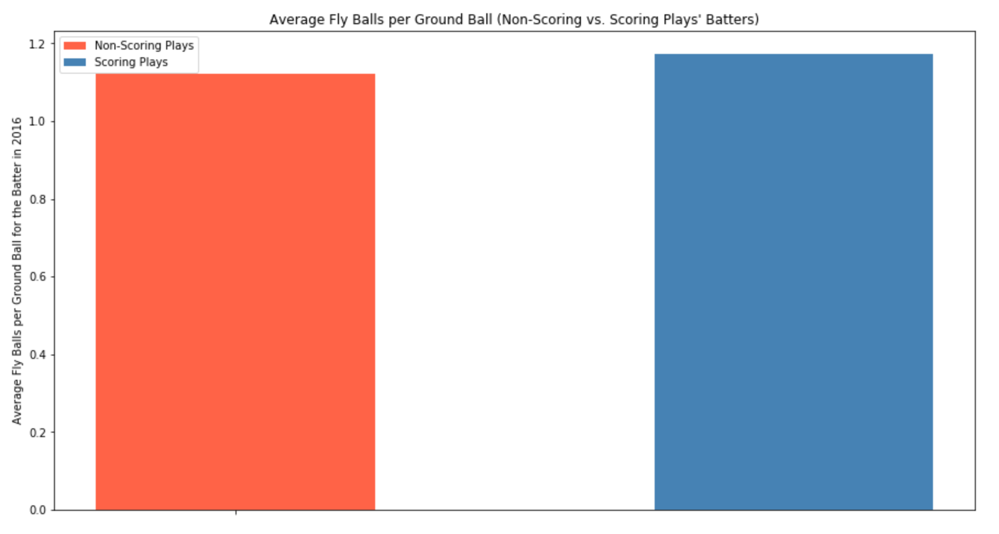

To study our question, we gathered play-by-play data for all games played in the 2017 season. Our scraped play-by-play data, which we gathered from https://www.baseball-reference.com/leagues/MLB-schedule.shtml, records the following things:
This data was scraped from the web from the baseball reference pages, and then we worked to clean and manipulate it so that we could have a variable for whether each individual base was occupied, as well as a calculation of the number of runs scored on each particular plate appearance.
In addition to this data, we also gathered two other kinds of data: data on the seasonal batting statistics of all players from 2000 to 2017 (from ESPN), as well as data on teams' defensive/fielding statistics for all teams from 2000 to 2017 (from ESPN). We then matched up batters' statistics (from 2016) and defensive teams' fielding statistics (from 2016) to each play, and used this matched-up data set to train our baseline model.
When first looking at the play-by-play data, one interesting feature stood out that immediately seemed intuitively useful - whether each base is occupied. Intuitively, you would expect that if you have runners on base, you have a much better chance of scoring some number of runs on a plate appearance - and it turns out that this is the case, as shown below:

As we see above, it's clear that having a runner on any base is highly linked to runs being scored. Even when a runner is on first base, more runs are scored on average through a plate appearance (around .2 runs per plate appearance) than for those without a runner on first base (less than .1 runs per plate appearance). And for second base (the "runner in scoring position"!) the disparity is enhanced (around .3 vs .07), and even further when we have a runner on third base (around .5 vs .07). Thus, as we might expect, having a runner on a later base is linked to increased runs scored on average on a plate appearance, and having any runner on base at all (even first base) is also linked to increased runs scored on average for a plate appearance.
One aspect that we found to have little linkage to runs scored during a plate appearance was that of the score of the batting or fielding team when a plate appearance occurred. Below, you can see that except for a couple of outlier scores, the average number of runs scored for a plate appearance varied relatively little when comparing the averages over many possible scores.


There are slight trends we might identify; low-scoring teams in a game seem to have slightly smaller average points scored per plate appearance when at bat, and teams tend to score slightly less per plate appearance when the fielding team has allowed more points already. But in either case, neither trend appears as significant as one might expect (even ignoring the outliers for the very few high-scoring games with over 16 runs in the game scored by one team). Still, there's enough of a samll trend (when looking at both scores of batting and fielding teams) that we might want to investigate this further in later studies besides this project.
By grouping the play-by-play data based on which plays generated runs and which plays did not generate runs, we can take a look at two factors that seem to link with generating runs.
First off, scoring plate appearances in 2017 featured batters with 3.2 more runs created on average (based on 2016) than non-scoring plate appearances. Batters in scoring plays had 67.6 runs created in 2016 on average, while batters in non-scoring plays had 64.4 runs created in 2016 on average:

In addition, scoring plate appearances in 2017 featured batters who hit slightly more fly balls per ground ball on average than batters for non-scoring plate appearances, as shown below. The trend also held for isolated power, where batters for scoring plate appearances had slightly higher isolated power on average compared to those for non-scoring plate appearances.

In all of this EDA, we noticed the strong links between having baserunnners on base and scoring on a plate appearances, and also looked at the impacts of game scores and batting statistics on plate appearances. Thus, in the wake of our exploratory data analysis and research, we thus decided to focus on the following study questions:
Using this data, can we develop strategies for picking batters in a given scenario, and determine what scenarios make batters most likely to score? Namely:
If we knew how to answer the above questions, our models could help to really improve coaches' decisions and help them determine which batters to play in which situations. The main mechanism that our model would be useful for is that of pinch hitting, where coaches can substitute in batters into the lineup at key moments in the game if they feel that the situation warrants such a substitution. A model that takes batters' statistics and tells us which batters are more likely to do better in a given situation could tell a coach whether to substitute in a pinch hitter or not (when the bases are loaded, when your team is down by a certain number of runs, etc.). A model that could differentiate between different batters for various situations would take some of the guesswork out of figuring out when to have batters pinch hit. And even generally, figuring out which batters are best in general for scoring runs would help coaches figure out which players should play games or which players they should aim to recruit for their teams in the off-season.
What's challenging about answering these questions, however, is that it's hard to figure out when runs will be scored because our play-by-play data is quite unbalanced. Around 90% of the plays generate no runs at all, and very, very few plays are able to generate 2 or more runs. This means that any model that we hope to train on the data will just not have that much data on plays with runs scored to work with when it tries to figure out which plays will score runs and which plays will not.
Undaunted, to begin to answer these questions, we began working on themodeling aspect of our project.